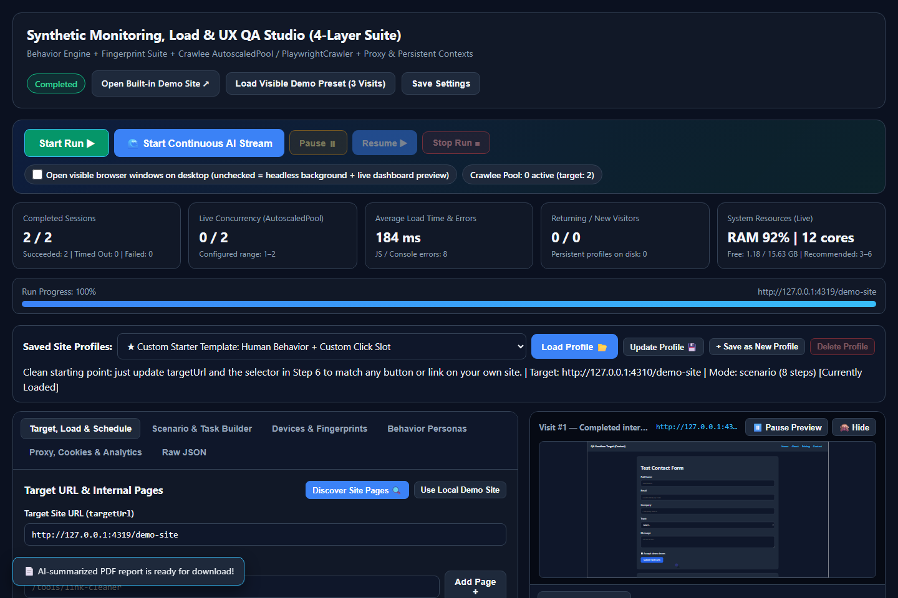
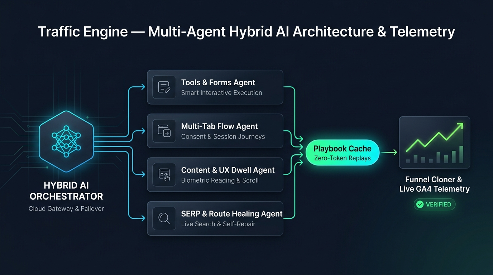

Self-hosted Playwright & Crawlee browser automation studio
Run geo-routed Chromium, Patchright, Camoufox, or Lightpanda sessions from one Express dashboard on port 4310—with live rrweb replay, GA4 hit verification, metered proxy caps, OTP inboxes, and hybrid multi-agent AI.
127.0.0.1:4310
Engines: Playwright · Patchright · Camoufox · Lightpanda



Local Express dashboard streaming live Crawlee workers, rrweb browser frames, and real google-analytics.com/g/collect verification payloads.
Core studio capabilities built for real browser QA
Everything runs locally inside your own infrastructure or Docker Swarm with strict redaction and zero forced SaaS lock-in.
Multi-engine stealth & fingerprints
Switch seamlessly between standard Playwright Chromium, Patchright, Camoufox, Lightpanda CDP, and HTTP fast-mode workers. Desktop and mobile fingerprints enforce matched userAgentData, scale factors, and local profile persistence.
Live rrweb & GA4 hit inspection
Inspect live worker frames inside the dashboard via Server-Sent Events and rrweb DOM snapshots while verifying outgoing google-analytics.com/g/collect hits per session.
Hard proxy byte budget & RAM saver
Cap metered residential consumption in megabytes (byteBudgetMb) with automatic datacenter fallback, RAM static caching, and third-party tracker blocking in lite and ultra_lite modes.
Hybrid multi-agent AI & Playbook cache
Combine deterministic Playwright scenarios with 4 specialized AI roles, zero-output-token clef:27b step routing, and an in-memory route Playbook Cache that drops repeat token cost to zero.
Live temporary inboxes & OTP sweeps
Provision fresh disposable email addresses per session via HirePulse, submit signup forms with fill_email, wait for real confirmation codes with fill_otp, and re-sweep delayed emails after runs finish.
Docker Swarm & Windows quickstart
Run directly on Windows with start-dashboard.bat or scale headless Chromium workers and a Lightpanda CDP sidecar across Linux containers via docker-compose.yml.
Inside the workbench: real captures from production runs
Every capability in the repository is backed by deterministic tests and visible telemetry inside the local UI.

Install and run in two minutes
Start locally with Node.js LTS or generate a tailored configuration in your browser before cloning.
Windows PowerShell / Node.js LTS
git clone https://github.com/edtool79-collab/ai-organic-traffic-engine.git
cd ai-organic-traffic-engine
npm install
npm --prefix dashboard install
npx playwright install chromium firefox webkit
Copy-Item config.example.json config.json
Copy-Item .env.example .env.local
npm startDocker Compose Swarm & Lightpanda Sidecar
cp config.example.json config.json
cp .env.example .env.local
docker compose up -d dashboard
docker compose --profile swarm up -d --scale worker=4
docker compose --profile lightpanda up -dRun offline unit & redaction verification at \$0 cost with npm test and node tests/verify-plan.js.
Connected tools, data APIs & real-world sites
Traffic Engine AI is part of the HirePulse & CitedCart open developer ecosystem. Explore our live gateways, MCP tools, storefront AI audits, and reference apps.
GitHub Source & Releases
Clone the full Node.js, Playwright, Crawlee, and Docker Compose studio, inspect source files, or open an issue.
HirePulse Cloud Credits & Live Inboxes
Power AI Commander, /v1/qa/step-decision, and automated temporary email + OTP verification sweeps with zero upstream AI keys.
HirePulse Agent Gateway (MCP + x402)
Autonomous B2B, tech stack, Google Ads transparency, and storefront security tools over MCP and x402 USDC on Base.
HirePulse Data Tools Hub
Interactive calculator, sample outputs, and runnable API guides across 21 public intelligence tools.
HirePulse Public Actors (Apify)
Managed Apify Actors and public Tasks for Google Jobs, ATS boards, keyword volume, and AI visibility audits.
HirePulse Jobs Radar
Daily refreshed company job listings read directly from Greenhouse, Lever, Ashby, and Workable systems.
CitedCart — AI Visibility Audit
Check what AI shopping assistants read on Shopify and WooCommerce product pages—price, stock, shipping, and returns.
CitedCart Free SEO & Schema Tools
Free Product Schema Generator, AI Robots.txt Checker, Shipping Policy Checker, and Product Copy Readability tool.
CleanTab Lab
Zero-upload browser utilities for stripping tracking parameters, formatting AI prompts, and verifying consent hygiene.
GTA 6 U.S. Launch Clock
Fast Cloudflare static-asset site demonstrating GA4 consent tracking and high-speed global edge delivery.
ModcraftForge
Daily curated directory of PC and console game mods across top titles.
Frequently asked questions
What engines does Traffic Engine AI support out of the box?
It orchestrates Playwright Chromium, Patchright stealth Chromium, Camoufox (anti-fingerprint Firefox), Lightpanda CDP sidecar, and lightweight HTTP fast-mode workers from one config.json schema.
How does it prevent proxy bandwidth overages on metered residential pools?
src/residentialPool.js measures downloaded session bytes multiplied by overheadFactor and enforces byteBudgetMb. When the budget is reached, traffic switches cleanly to fallbackServers or halts instead of overrunning your bill.
Do I need external AI API keys to run the dashboard and scenarios?
No. Scripted scenario, behavior, and hybrid modes work locally without AI keys. When you want autonomous DOM exploration, route healing, and AI Fleet Commander directives, you can plug in Ollama Cloud, UncensoredLLM, or hosted HirePulse Cloud Credits.
How do live email and OTP verification steps work during a QA signup run?
src/emailInboxClient.js connects to the HirePulse inbox API (configured via HIREPULSE_EMAIL_API_KEY or HIREPULSE_OWNER_PILOT_TOKEN) to provision disposable per-visit addresses, fill forms with fill_email, extract codes via fill_otp, and run post-visit emailSweepPasses.